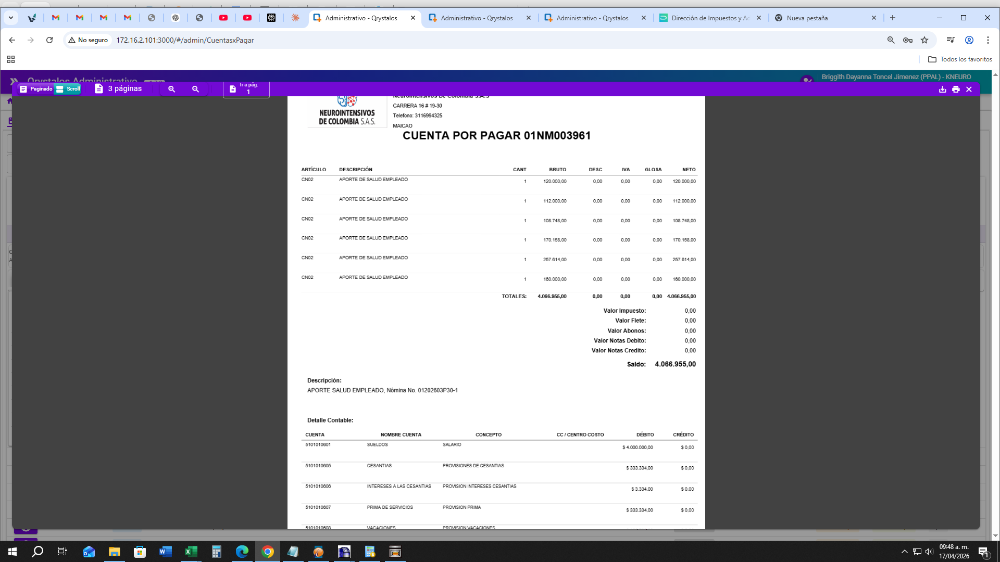

Mockup UX — propuesto · REQ 0100016566 · Rama hotfix/NEUINT43
caso 20261001-0100016566 · ventana del cambio, no la captura del error
Qué se desarrolla
Al imprimir la CxP de EPS (procedencia Nómina), el bloque
Detalle contable deja de mostrar la nómina de un empleado (sueldos/provisiones) y muestra el aporte del tercero — o un aviso si no hay asiento — sin cambiar líneas CN02 ni saldo.
Qrystalos Administrativo
/admin/CuentasxPagar · Imprimir CxP
Inicio > Administrativo > Cuentas por pagar > Impreso 01NM003961
CUENTA POR PAGAR 01NM003961
CUENTA POR PAGAR Nº 01NM003961
| ARTÍCULO | DESCRIPCIÓN | NETO |
|---|
| CN02 | APORTE DE SALUD EMPLEADO | … |
| Saldo | 4.066.955,00 |
Detalle contable Propuesto
| CUENTA | NOMBRE | CONCEPTO | DÉBITO | CRÉDITO |
|---|
|
Líneas del aporte al tercero EPS en el CNSPAGO (consolidadas / filtradas por IDTERCERO) — no el MCP «PAGO DE NOMINA» de un empleado.
|
| 2301210602 | (pasivo / contra EPS) | APORTE DE SALUD | 4.066.955 | 0 |
| … | (contrapartida del aporte) | APORTE DE SALUD | 0 | 4.066.955 |
Si no hay asiento del tercero: mensaje «Sin comprobante consolidado del aporte» — no se muestra sueldos/provisiones de un empleado.
Criterios visibles en esta ventana
- Detalle de la CxP (CN02) y saldo 4.066.955 sin cambio.
- Detalle contable = aporte del tercero EPS, no sueldos/provisiones de un empleado.
- Si no hay comprobante del aporte, aviso claro.
Hoy — referencia del problema (no es el entregable)

Cambio vs hoy: GENERATE_CxP_NOM deja de pegar el NROCOMPROBANTE de un empleado; el impreso arma Detalle contable del aporte EPS (o avisa).